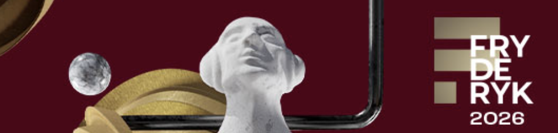
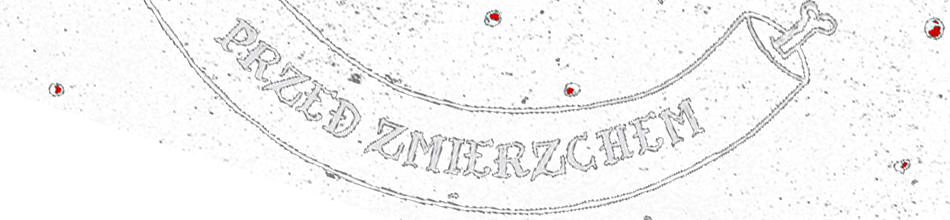

CHRUST to zespół który zamienia słowiański folk w energetyczny spektakl. Trzy odmienne osobowości folk, elektronika i rock tworzą show, które równie dobrze sprawdza się na festiwalowej scenie, jak i w klubie. Koncerty CHRUSTU to intensywne emocje, mocne groove’y i opowieści zakorzenione w tradycji, opowiedziane językiem współczesnej alternatywy. Zespół ma na koncie nominacje i nagrody na prestiżowych przeglądach (FRYDERYKI, ONET O!LŚNIENIA, Rock May Festival, InMemoriam, Soundella), udział w „Must Be The Music” oraz finał polskich kwalifikacji do Eurowizji 2025 co czyni go jednym z czołowych przedstawicieli nowej fali polskiego folku w mainstreamie. To idealna propozycja dla organizatorów, którzy szukają czegoś więcej niż „kolejnego rockowego” czy „kolejnego folkowego” zespołu. CHRUST łączy oba światy w spójną, widowiskową całość.
Na każdym koncercie występujemy w kostiumach. Przyjeżdżamy z własną scenografią, realizatorem frontu, odsłuchu, stołem, omikrofonowaniem oraz statywami. W ramach jednolitej stawki sami organizujemy swój transport, nocleg oraz wyżywienie. Rozliczamy się fakturą, zwolnioną z VAT na podstawie umowy i preferujemy podpis kwalifikowany. Tutaj znajdziecie Państwo nasz rider techniczny i wszystkie materiały dla organizatorów. W przypadku zainteresowania współpracą, prosimy o kontakt mailowy lub telefoniczny, abyśmy mogli omówić szczegóły i przygotować indywidualną ofertę dostosowaną do Państwa potrzeb.


Dariusz Mrozek
perkusja, sampler, wokal
Absolwent Akademii Muzycznej w Gdańsku. Na co dzień pracuje w Straży Granicznej jako perkusista, Po godzinach uczy grać na perkusji we własnej szkole muzycznej. W czasie wolnym - gra na perkusji. W zespole odpowiedzialny za równe granie, sample i wszechobecny hałas. Poza pracą i zespołem współtworzy wiele projektów i inicjatyw muzycznych.
Małgorzata Oleszczuk
wokal, ukulele, flety
Absolwentka wokalistyki jazzowej Akademii Muzycznej w Gdańsku, miłośniczka śpiewu i muzyki tradycyjnej, ogólno-folkowej oraz filmowej. W Chruście jest głosem wiodącym, odpowiada też za wszelkiego rodzaju chórki, flety i krzyki w tle. Jej największym muzycznym marzeniem jest współtworzenie muzyki do filmów i gier
Karol Konop
syntezator, wokal, produkcja
Absolwent Polsko Japońskiej Akademii Technik Komputerowych. Na co dzień inżynier informatyk w korporacji, po godzinach producent audiovideo. Fanboy Roberta Makłowicza i Trenta Reznora. W zespole Chrust odpowiedzialny za syntezatory i produkcję muzyczną. Jego matką było drzewo a ojcem przebieg piłokształtny oscylatora Mooga.
2026
CHRUST zostaje nominowany do nagrody FRYDERYK 2026 w kategorii Album Roku Muzyka Korzeni, za album "Przed Zmierzchem".

2026
CHRUST otrzymuje nagrodę ONET O!Lśnienia w kategorii muzyka popularna, za album "Przed Zmierzchem".
2025
Zespół zajmuje czwarte miejsce w finale Polskiego Konkursu Piosenki Eurowizji.
2025
CHRUST dostaje 4 x TAK w ćwierćfinale Must Be The Music! od Dawida Kwiatkowskiego, Natalii Szroeder, Miuosha oraz Sebastiana Karpiel-Bułecki.
2025
Zespół wydaje swój drugi album „Przed Zmierzchem” zawierający m.in. utwór „Tempo”, znany z polskich preselekcji do Konkursu Piosenki Eurowizji 2025. Utwór „Róża” nagrany we współpracy z Czesławem Mozilem czy „Zapiera Mi Dech” z Joanną Jabłczyńską.

2024
Zespół wygrywa nagrodę główną oraz nagrodę dla najlepszego perkusisty na konkursie InMemoriam Grzegorza Ciechowskiego, przedstawiając autorską interpretacje utworu "Dziewczyna Szamana".
2024
CHRUST występuje na na inauguracyjnym koncercie Męskiego Grania na scenie Radia 357.
2024
CHRUST występuje jako headliner na głównej scenie SlotArt Festival.
2024
Zespól występuje na największych polskich showcaseach takich jak Great September, SeaYou Music Festival oraz Tak Brzmi Miasto.
2023
Zespół koncertując zdobywa wiele nagród i wyróżnień, w tym nagrodę dla najlepszej wokalistki na Soundella Festival, nagrodę główną oraz nagrodę publiczności na Rock May Festival.
2022
Zespół własnym sumptem wydaje debiutancki album pt. CHRUST który szybko zdobywa popularność wśród dziennikarzy i słuchaczy.
2021
CHRUST powstaje w Gdańsku podczas pandemii i wydaje debiutancki singiel „Hen za rzeką” który przy pomocy promocji dziennikarzy Radia Gdańsk, otwiera zespołowi drogę na sceny polskich festiwali dla młodych zespołów.
chrust@chrustfolkmusic.pl
+48 504 223 320
© 2026 CHRUST
wszystkie prawa zastrzeżone
Zdjęcia: Sebastian Bernatowicz, Monika Kutkowska, Szymon Ogrodnik
Projekt strony internetowej: Karol Konop